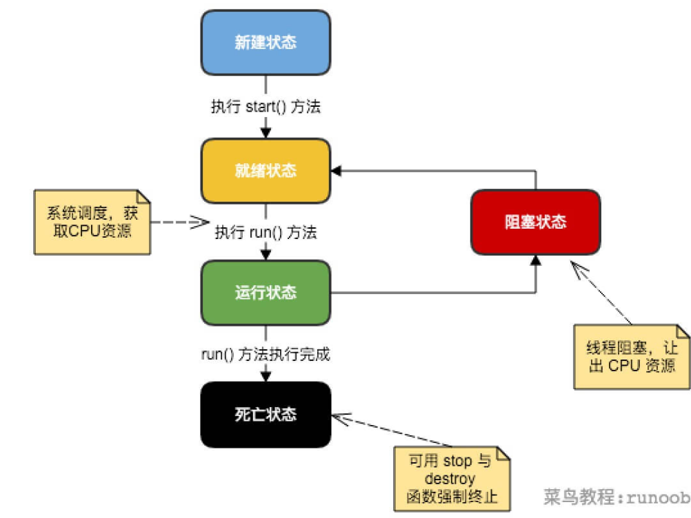

Java 多线程编程
Java 给多线程编程提供了内置的支持。 一条线程指的是进程中一个单一顺序的控制流，一个进程中可以并发多个线程，每条线程并行执行不同的任务。
多线程是多任务的一种特别的形式，但多线程使用了更小的资源开销。
这里定义和线程相关的另一个术语 - 进程：一个进程包括由操作系统分配的内存空间，包含一个或多个线程。一个线程不能独立的存在，它必须是进程的一部分。一个进程一直运行，直到所有的非守护线程都结束运行后才能结束。
多线程能满足程序员编写高效率的程序来达到充分利用 CPU 的目的。
一个线程的生命周期
线程是一个动态执行的过程，它也有一个从产生到死亡的过程。
下图显示了一个线程完整的生命周期。

新建状态:
使用 new 关键字和 Thread 类或其子类建立一个线程对象后，该线程对象就处于新建状态。它保持这个状态直到程序 start() 这个线程。就绪状态:
当线程对象调用了start()方法之后，该线程就进入就绪状态。就绪状态的线程处于就绪队列中，要等待JVM里线程调度器的调度。运行状态:
如果就绪状态的线程获取 CPU 资源，就可以执行 run()，此时线程便处于运行状态。处于运行状态的线程最为复杂，它可以变为阻塞状态、就绪状态和死亡状态。阻塞状态:
如果一个线程执行了sleep（睡眠）、suspend（挂起）等方法，失去所占用资源之后，该线程就从运行状态进入阻塞状态。在睡眠时间已到或获得设备资源后可以重新进入就绪状态。可以分为三种：
等待阻塞：运行状态中的线程执行 wait() 方法，使线程进入到等待阻塞状态。
同步阻塞：线程在获取 synchronized 同步锁失败(因为同步锁被其他线程占用)。
其他阻塞：通过调用线程的 sleep() 或 join() 发出了 I/O 请求时，线程就会进入到阻塞状态。当sleep() 状态超时，join() 等待线程终止或超时，或者 I/O 处理完毕，线程重新转入就绪状态。
- 死亡状态:
一个运行状态的线程完成任务或者其他终止条件发生时，该线程就切换到终止状态。
线程的优先级
每一个 Java 线程都有一个优先级，这样有助于操作系统确定线程的调度顺序。
Java 线程的优先级是一个整数，其取值范围是 1 （Thread.MIN_PRIORITY ） - 10 （Thread.MAX_PRIORITY ）。
默认情况下，每一个线程都会分配一个优先级 NORM_PRIORITY（5）。
具有较高优先级的线程对程序更重要，并且应该在低优先级的线程之前分配处理器资源。但是，线程优先级不能保证线程执行的顺序，而且非常依赖于平台。
创建一个线程
Java 提供了三种创建线程的方法：
- 通过实现 Runnable 接口；
- 通过继承 Thread 类本身；
- 通过 Callable 和 Future 创建线程。
通过实现 Runnable 接口来创建线程
创建一个线程，最简单的方法是创建一个实现 Runnable 接口的类。
为了实现 Runnable，一个类只需要执行一个方法调用 run()，声明如下：
public void run()
你可以重写该方法，重要的是理解的 run() 可以调用其他方法，使用其他类，并声明变量，就像主线程一样。
在创建一个实现 Runnable 接口的类之后，你可以在类中实例化一个线程对象。
Thread 定义了几个构造方法，下面的这个是我们经常使用的：
Thread(Runnable threadOb,String threadName);
这里，threadOb 是一个实现 Runnable 接口的类的实例，并且 threadName 指定新线程的名字。
新线程创建之后，你调用它的 start() 方法它才会运行。
void start();
下面是一个创建线程并开始让它执行的实例：
1 | class RunnableDemo implements Runnable { |
1 | Creating Thread-1 |
通过继承Thread来创建线程
创建一个线程的第二种方法是创建一个新的类，该类继承 Thread 类，然后创建一个该类的实例。
继承类必须重写 run() 方法，该方法是新线程的入口点。它也必须调用 start() 方法才能执行。
该方法尽管被列为一种多线程实现方式，但是本质上也是实现了 Runnable 接口的一个实例。
1 | class ThreadDemo extends Thread { |
1 | Creating Thread-1 |
Thread 方法
实例
如下的ThreadClassDemo 程序演示了Thread类的一些方法：
1 | // 文件名 : DisplayMessage.java |
1 | // 文件名 : GuessANumber.java |
1 | // 文件名 : ThreadClassDemo.java |
1 | 运行结果如下，每一次运行的结果都不一样。 |
通过 Callable 和 Future 创建线程
创建 Callable 接口的实现类，并实现 call() 方法，该 call() 方法将作为线程执行体，并且有返回值。
创建 Callable 实现类的实例，使用 FutureTask 类来包装 Callable 对象，该 FutureTask 对象封装了该 Callable 对象的 call() 方法的返回值。
使用 FutureTask 对象作为 Thread 对象的 target 创建并启动新线程。
调用 FutureTask 对象的 get() 方法来获得子线程执行结束后的返回值。
1 | public class CallableThreadTest implements Callable<Integer> { |
创建线程的三种方式的对比
采用实现 Runnable、Callable 接口的方式创建多线程时，线程类只是实现了 Runnable 接口或 Callable 接口，还可以继承其他类。
使用继承 Thread 类的方式创建多线程时，编写简单，如果需要访问当前线程，则无需使用 Thread.currentThread() 方法，直接使用 this 即可获得当前线程。